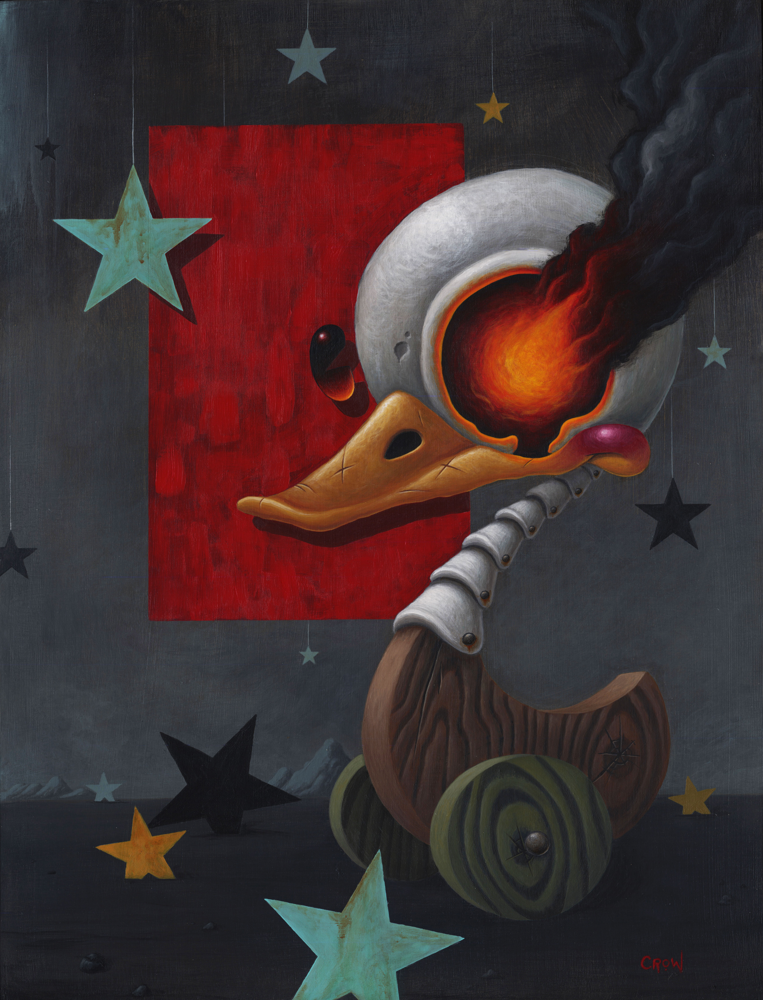

Physical Media
Before transitioning to digital media, I worked primarily in traditional illustration, creating artwork by hand in a variety of mediums. I have been drawing since childhood and began painting in 2007, gaining experience with acrylic, watercolor, and gouache that continues to shape my creative process.

My work often explores identity, imagination, and the worlds we build to escape, celebrate, or transform our own realities. It also reflects my growing awareness of adulthood its disappointments, compromises, and the weight of becoming a functioning member of society. Through my characters and visual narratives, I confront the lingering regret of dreams deferred and the ache of goals left behind. At the same time, my art seeks to reconnect with the youthful belief that nothing is impossible, reclaiming the energy and optimism that once made every future feel wide open.